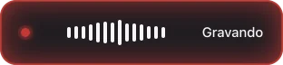
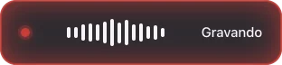
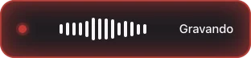
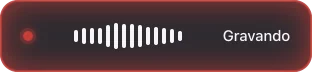
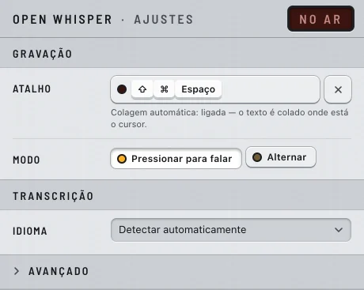
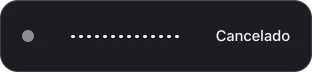
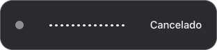
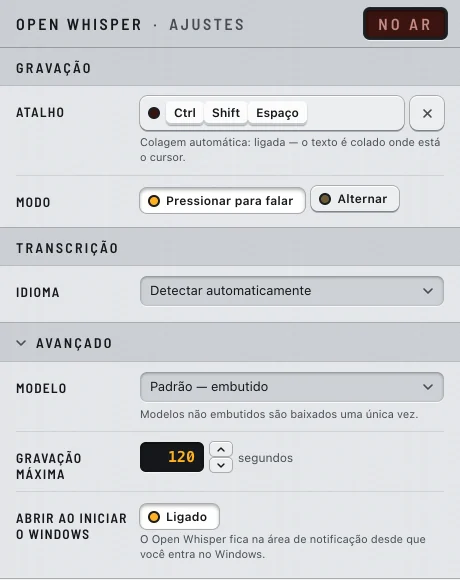
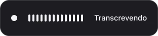
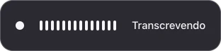

Ditar é um ciclo só: atalho, fala, texto no cursor. Esta página mostra esse ciclo, os dois modos, como cancelar, o que encerra uma gravação sozinha e o que o indicador e os sons estão dizendo.
O ciclo
- Deixe o cursor onde você quer o texto, em qualquer app.
- Segure ⇧⌘Espaço no Mac ou CtrlShiftEspaço no Windows e fale.
- Solte. O indicador mostra Transcrevendo, e o texto é colado onde está o cursor.
O atalho funciona com qualquer app na frente e não precisa de permissão. O áudio fica no seu computador e é descartado depois da transcrição: veja Privacidade.
Se o texto não aparecer no cursor, ele está esperando na área de transferência: veja Onde o texto vai parar.
- Apertar o atalho enquanto aparece Transcrevendo não faz nada: espere o texto e dite de novo.
- O item Iniciar Gravação do menu faz o mesmo que o atalho: veja O ícone e o menu.




O seu atalho
O padrão é ⇧⌘Espaço no Mac e CtrlShiftEspaço no Windows. Dá para gravar outro nos Ajustes.
- Ele precisa ter ⌘, ⌃ ou ⌥ no Mac, ou Ctrl ou Alt no Windows. Só o Shift não conta, e a tecla Windows não pode fazer parte dele.
- Algumas combinações são do sistema. Se você escolher uma delas, os Ajustes mostram a combinação seguida de é reservado pelo macOS. (no Windows, é reservado pelo Windows.), e o Open Whisper passa a usar ⇧⌘D no Mac ou CtrlShiftD no Windows. O item Iniciar Gravação do menu sempre mostra o atalho que está valendo.
- Se outro app já usa a combinação, os Ajustes mostram Não foi possível registrar, seguido da combinação. Escolha outra; enquanto isso, o Iniciar Gravação do menu continua funcionando.
Windows
CtrlShiftEspaço também tem função no Word (o espaço não separável) e no VS Code. Se você usa esses programas, escolha outro atalho.
A lista completa de teclas está em Atalhos e teclas.
Pressionar para falar ou Alternar
| Modo | Para começar | Para parar |
|---|---|---|
| Pressionar para falar (padrão) | Segure o atalho | Solte |
| Alternar | Aperte o atalho uma vez | Aperte de novo |
Troque nos Ajustes, em Modo. Vale na hora. Só o Alternar consegue parar sozinho depois de um silêncio (veja Quando a gravação termina sozinha).



Cancelar com Esc
Mudou de ideia no meio da gravação? Aperte Esc. O áudio é jogado fora sem ser transcrito: nada é colado, a área de transferência fica como estava e a última transcrição continua a mesma. O indicador mostra Cancelado por cerca de um segundo, com um som próprio, e o menu mostra Open Whisper — Gravação cancelada.
- O Open Whisper só captura o Esc enquanto está gravando. No resto do tempo, o Esc chega aos seus apps normalmente.
- Quando o indicador já mostra Transcrevendo, o Esc não cancela mais.
Mac
Em Alternar, aperte Esc. Em Pressionar para falar, aperte Esc ainda segurando o atalho: com o padrão, fica ⇧⌘Esc.
Um atalho que segura ⌥ e ⌘ juntos não consegue cancelar em Pressionar para falar: ⌥⌘Esc é o Forçar Encerrar do macOS, e o Open Whisper não mexe nele.
Windows
Em Alternar, aperte Esc.
Em Pressionar para falar com o padrão CtrlShiftEspaço, o Esc não consegue cancelar: CtrlShiftEsc abre o Gerenciador de Tarefas, e o Open Whisper deixa essa combinação para o Windows. O mesmo vale para atalhos segurados só com Ctrl ou só com Alt (CtrlEsc abre o Iniciar, AltEsc troca de janela). Soltar as teclas encerra a gravação e transcreve.




Quando a gravação termina sozinha
Encerrar após silêncio (só em Alternar)
No modo Alternar, o Open Whisper pode encerrar a gravação quando você para de falar. Vem desligado. Ligue nos Ajustes → Avançado → Encerrar após silêncio e escolha de 1 a 10 segundos, de meio em meio segundo. A linha só aparece no modo Alternar.
- A contagem só começa depois que você fala: silêncio antes da primeira palavra nunca encerra a gravação.
- Pausas mais curtas que o tempo escolhido não encerram.
- Barulho constante do ambiente conta como silêncio. Uma respiração ou um rangido não seguram a gravação aberta.
- O silêncio do final é cortado antes da transcrição.
- Se você apertar o atalho até 1,5 segundo depois que a gravação parou sozinha, o Open Whisper entende que era o seu "parar" atrasado e não começa outra gravação.
Duração máxima
Toda gravação, nos dois modos, para num limite de tempo: 120 segundos por padrão, ajustável de 15 a 1800 segundos (30 minutos) nos Ajustes → Avançado → Gravação máxima. No limite, o que foi gravado é transcrito e colado normalmente, e uma notificação avisa Gravação interrompida no limite de tempo — transcrevendo o áudio capturado.




O indicador e os sons
Enquanto você dita, um indicador pequeno aparece embaixo, no centro da tela que você está usando. Ele fica por cima de todas as janelas, inclusive apps em tela cheia, nunca rouba o foco e deixa os cliques passarem.
| O indicador mostra | Quando |
|---|---|
| Gravando | Durante a gravação. Uma luz vermelha e um medidor de nível que acompanha a sua voz. |
| Transcrevendo | Do momento em que você para até o texto ser entregue. |
| Erro | Por um instante, quando algo falhou. Uma notificação diz o quê (veja abaixo). |
| Cancelado | Por cerca de um segundo, depois do Esc. |
Ele some quando o ditado termina.
Mac
A gravação começa com o som Tink e termina com Pop, tenha o texto sido entregue, nenhuma fala sido ouvida ou algo falhado. O cancelamento soa Purr.
Windows
O Open Whisper toca sons próprios: um quando a gravação começa, um quando ela termina (texto entregue, nenhuma fala ouvida ou uma falha) e um para o cancelamento.
Leitores de tela (VoiceOver no Mac, Narrador no Windows) anunciam quando a gravação começa, quando ela é cancelada e quando há um erro.




Quando nada é colado
Se a gravação não tinha fala, nada é colado e nenhuma notificação aparece: você só ouve o som do fim. Um resultado sem letras nem números, como um ponto sozinho, conta como nenhuma fala. Tente de novo, mais perto do microfone.
Os outros casos vêm com uma notificação:
| Notificação | O que quer dizer |
|---|---|
| Nada foi gravado — confira a permissão do microfone ou segure o atalho um pouco mais. | O toque foi curto demais para gravar algo, ou falta a permissão do microfone. |
| Microfone indisponível — verifique a permissão ou se outro app está usando. | Não há microfone conectado, ou outro app está usando. |
| O Windows está bloqueando o microfone. Libere em Configurações → Privacidade e segurança → Microfone, inclusive para aplicativos da área de trabalho. | Só no Windows: a privacidade do sistema bloqueia o microfone, e nada foi gravado. Veja Permissões. |
| Não foi possível transcrever esse áudio. Tente de novo. | A transcrição falhou. Dite de novo. |
| Não foi possível carregar o modelo. Verifique nos Ajustes. (no Windows, nas Configurações) | O modelo escolhido sumiu ou está danificado. Nos Ajustes → Avançado → Modelo, escolha Padrão: veja Modelos. |